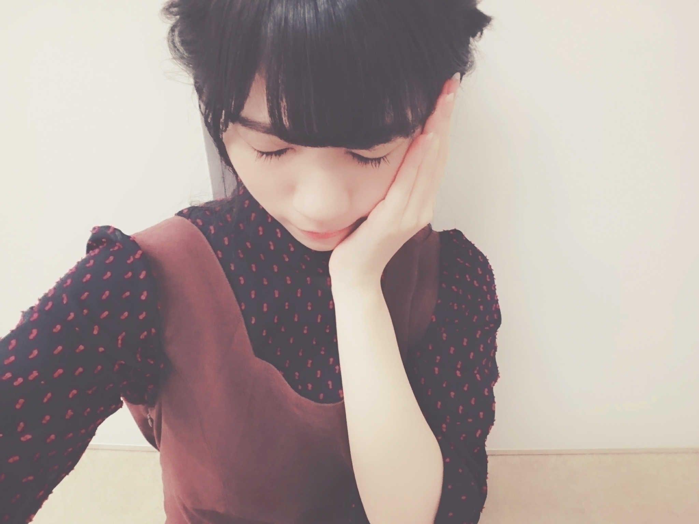
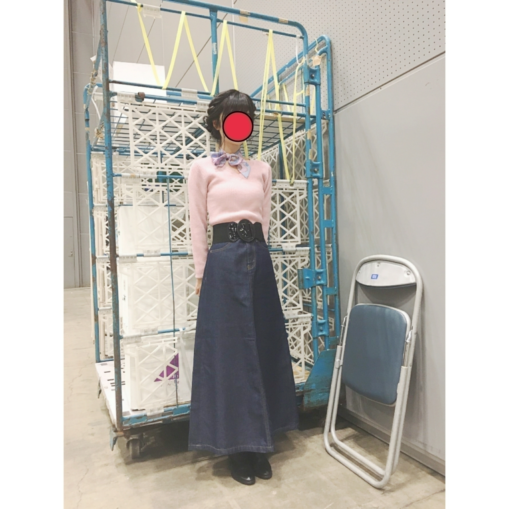
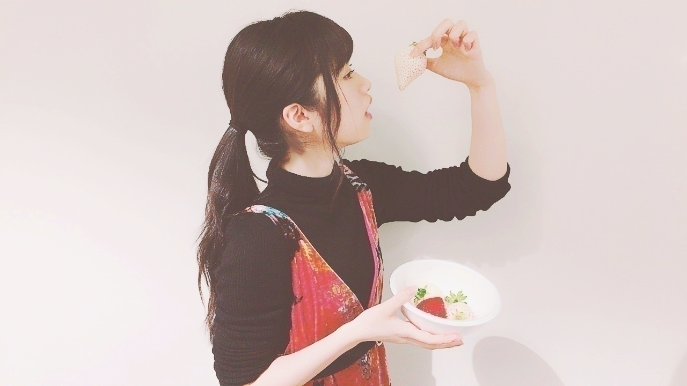

2017/0311Satダシちゃうねん、
待ち受け画面をかえたら携帯の雰囲気がかわって
新鮮な気持ちになりました(..)
まるで、新しい携帯に生まれ変わったみたい
皆さんも良かったら、、、
ちなみに私は空の画像にしました(..)
最近の握手会私服◎


（目をつぶりそうな顔をしていたので顔は隠しました。）
セーター：used
スカート：GU さん
首に巻いているのは本当は
頭に巻くヘアアクセサリーをスカーフにしました。
トップスは古着で300円くらいでしたー
スカートもGUさんのSALEになっていて900円くらいで購入したスカートでした✨
本当にありがとうございます
はじめましてさんも
興味を示してくれた事が
とても嬉しいです✨
いつも来てるよって方も
私みたいな人間飽きられちゃわないかなって心配してるんだけどね
心から楽しんで「また今度ね」って言って下さると
それもまた嬉しいです
皆さんには本当に感謝してます✨
また、握手会来た事ないけど乃木坂46の応援をして下さる皆さんにも勿論感謝しております✨
最近は外国人の方が多く
女の子も凄く増えた印象です。
通訳さん付けてくれる方とかもいて自分も身振り手振りで頑張っておりますw(:_;)w
老若男女ー
そしてボーダーの歌詞にもあるのですが国境を超えていきたいです
まだ、寺田蘭世に直接あった事ない方はぜひ、、、
世界中の沢山の人と会うのが私の目標でもありますので宜しければ遊びに来て下さい
いつでもお待ちしてます✨
白い苺を食べてます

セーター︰UNIQLO さん
ワンピース︰ZARA さん
5部まで同じ服でした
着替えのベルトを持ってき忘れてしまうと言う、、、
でも、髪型を変えたりすると変化に気づいてくれる皆さん
私も皆さんに喜んでもらいたくて毎回髪型変えたり
お洋服も選んでるので
褒めてもらえたりその話題に触れてくれるとすごく嬉しいんですー(..)
握手会を心から楽しんでます✨
さっきも書きましたが
もっと沢山の人々に会うぞ
17枚目シングルの個別握手会も応募開始されています。
前回に引き続き全会場5部制です
まだ大丈夫かなって不安はありましたが、、、
なんと、4次受付にて
全完売w(:_;)w
これまた1年前の自分に知らせたら吃驚だろうな
今でも研究生の頃本当に誰も並んでなかった握手会レーンを思い出すことがあります、、、
今の乃木坂46と環境が違うし私の環境も変えたいと思って今日この日まで
頑張ってきました
でも未だに
らんぜはもう支えたくても大丈夫ーとか言われるのが怖くて怖くていつも強がりな面ばかりを見られる私ですが、皆がどこかに行かないか心配なんです、、、
私としてはまだまだ
高い目標があるし
寧ろここからだと
絶賛、皆でこつこつ一緒に積み上げている途中です！
それを無駄にしない為にも
今後も末永く宜しくお願い致します(..)
待ってますよ！！
これからも宜しくお願い致します！
お知らせ◎
2月4日 RiCE さん
2月6日 Top Yell さん
2月15日 EX大衆 さん
2月17日 AKB新聞 さん
2月23日 BRODY さん
2月24日 B.L.T. さん
3月9日 BOMB さん
3月15日 EX大衆 さん
3月17日 LARME さん
3月23日 アップトゥボーイ Vol.253 さん
3月24日 smart さん
ニッカンスポーツ・コム「NEWSがとまらんぜ」寺田蘭世
毎週金曜日配信
寺田蘭世が乃木坂46内や芸能界のニュースを貪欲にキャッチし、らんぜの独特な感覚でどんどん発信していきます！
こんなに沢山
有り難いです感謝してます
w(:_;)w
雑誌の撮影が自分的に一番楽しいお仕事の1つだと
最近気付きました。
自分の顔とかスタイル好きじゃないけど
毎回テーマをスタッフさん方が考えて下さったものがあって
その雰囲気造りやその一瞬切り取った世界観が
新たな自分が見えるし
なんて言うんでしょうね
手軽に海外行けたぜー
みたいな気持ちになるんですよ！
だから、写真撮影は大好きです！
最近もとても楽しい撮影がありましたー！
ロケ地もお衣装も環境も最高でしたー！
インタビューも好きです
いま自分を見つめ直せるし
自分と向き合える時間です
いつかスーパーロングインタビューされたいです
どなたか宜しくお願い致しますw(:_;)w
そう言えばさゆりんご軍団で連載やらせていただいてるEX大衆さんで
佐倉綾音さん可愛かった、、、✨
お会いできて光栄でした
本当に乃木坂46への愛を感じました
少しのインタビュー時間でしたが刺激を受ける事が沢山あってお話合うなーって
勝手ながら思いましたw(:_;)w
また、絶対お会いしたいです
このブログも読んで下さってたら、、、
久々のまともな自撮り。
いつもありがとうございます
沢山のコメントも
空き時間に読ませてもらってます！
コメント返しも不定期でやりますので
気になる事あったら
コメントしてみてください！
大した事出来ませんが
これからも
沢山の方に笑顔になって頂けるようつとめてまいります！
明日は握手会です！
宜しくお願い致します！
3月11日
東日本大震災から6年。
月日は経ちました。
でも、私はあの日の事を
6年たった今もはっきり覚えてます。
去年3月11日にも
書きましたが
風化させたくないです。
そして私にできること
1人でも多くの方々に
心の底から笑顔になって頂けるよう
これからも頑張ります。
被災されました皆様に心からお見舞い申し上げます。
2017/03/11 21:06


コメント(1248)
まずは17th30部全完売おめでとうございます。
モバメを見る限り、まだまだ満足はしていないように思えます。常に上を上を目指すその姿は多くの人の心を動かしていますよ。
蘭世が持つ強い瞳は未来を切り開くことができる、そう思います。
乃木坂のセンターに立つという誓いは決して不可能ではない、手の届くことができる夢だと信じています。
目指すべき場所はずっと上です。しかし、蘭世には見えているはず。
今年も寺田蘭世の風を吹かせてください！
4月の握手会で会えることを楽しみにしています！
蘭世の勢いとまらんぜ！！！
全握行けたら行くね！！！
ずっと好きやねん〜♪
ドナルドのなおき
いつも考え刺さられるっていうかなんか大人らしい
これからもがんばってね！
可愛いすぎ〜
4月に握手会行くから待っとけよー
いつか蘭世がセンターに立つ日を楽しみにしとく！
新曲、楽しみだね！
発売、たのしみだよー！
明日の個握はいけないけど、大阪の全握行予定やからその時宜しくね！
明日の個握頑張って(￣▽￣)
17の個握、全握いきます！
個握の8枚応募で8枚当たったから楽しみます！
初の個握です！
全握は2回目！
蘭世さんとは、初対面だぁ！ー
最近は忙しそうやね
握手会あんまし行けないよ
握手すごいよね！なかなか取れなかった！
とか言って名古屋は1〜5まで全部取れましたー楽しみ！
お衣装可愛すぎ！早く行きたいー！
明日からも頑張ってね！お休みなさい
握手会お疲れ様。
明日も握手会だよね。
やっと高校受験終わったからインフルエンサーの握手会いくね。
これからも応援してるね。
たま蘭世♪
白い苺食べたいな！！
17枚目は選抜として頑張ってね！
今度の握手会行くねー
蘭世がフェットチーネグミのピーチ味宣伝してるから
ピーチ味食べてるよ！！！！！！！！
ところで蘭世はグミ派？ガム派？？？
ブログ更新ありがとう
明日も握手会だね！楽しみやー！！！
握手会完売おめでとう╭( ･ㅂ･)و ̑̑ ｸﾞｯ !
すんごい早かったなー今回笑笑
自分は全然取れてないです(T ^ T)笑
でも、ほんとによかった！！！ほんとにおめでとう！！！
ここからまたがんばってこー\('ω`)｣
えい！えい！おーーー！
ではまた明日(ヾ(´・ω・｀)
私服安くておしゃれで凄いね！そのセンス見習いたいです(・∀・)
お仕事が充実しているようでとても嬉しく思います( ･ㅂ･)و ̑̑
17枚目の期間の活躍を楽しみにしてますね(*￣▽￣)ﾉ~~ ﾏﾀﾈｰ♪
とても楽しかったです(^^)
これからも応援してます！
待ち受け変えただけなのにそんな感じするよね。わかる。
心配しなさんな。
ずっと支えるさ。
ってなんやねん
待ち受け変えた時ってなんか新鮮に感じるよね！
白いイチゴ！れなちや飛鳥ちゃんも食べてたんだよね〜
差し入れかなんかかな？
自分はいつか蘭世ちゃんがセンターになるまで応援し続けるよ！楽しみに待ってる！
ブログ更新お疲れ様！
元気にしとーかな？
たっくさーん伝えたい事が
あるっちゃけど
それは3/12(日)の握手会で
伝えます(^ ^)
その握手会では約1ヶ月ぶりに
らんぜに会えるんで
楽しみにしとーよ(^ ^)
そして握手会全30部完売
おめでとう＼(^o^)／
らんぜがこんなにも早く
全30部完売なんて
信じられんよ(^ ^)
すごかねー！！
今回はらんぜの握手券を
思ったより取れなかったけど
でもそれは
らんぜを推してる自分にとって
嬉しい悲鳴☆*:.｡. o(≧▽≦)o .｡.:*☆
らんぜが頑張ってきた事が
みんなに認められた証やと思うと
凄く嬉しい事です(^ ^)
何日か前に
らんぜから送られてきた
メールの質問の回答
Q、らんぜのいきおい？
A、止まらんぜーーーーー！！
まさにこの質問通りの大活躍やねo(^ ^)o
ただいろいろと
忙しいやろうけん
体調だけには気をつけてね！
あっ！？
その為にも朝ごはんは大切やね！
自分は朝ごはん
食べれん事がほとんどやから
NEWSがとまらんぜでらんぜが
書いてくれてたように
朝ごはんをしっかり摂れねばと
思っとーよ(^_^;)
あと、3/9サンキューの日に
らんぜから嬉しい嬉しい
プレゼントが届きました(^ ^)
なんやろうかね？
その答えは握手会で(^^)v
いつもたくさんのメールを
忙しいなか送ってくれて
凄く感謝しとーよm(._.)m
では3/12ね！！
お互い元気に会いましょう(^ ^)
最後に
東日本大震災から６年…
亡くられた方のご冥福を
お祈り致しますm(._.)m
また
その被害で今なお
苦しんでおられる方
行方不明の方に希望の光が
灯る事を願っておりますm(._.)m
被災された皆様に
心よりお見舞い申し上げますm(._.)m
ユンです(*^^*)
かわいい写真がいっぱいで幸せだよ！！！
明日は握手会ですね
いいなー。
あ、自分プレゼントは届いたかな？
時計ですけど、、ちゃんと届いたらいいな
今日はいろんなことを翻訳したけど
また翻訳することができたなんて嬉しい 笑
働け！自分！
では宿題終わって翻訳して夜にまた書きます(^^)
最近コメントできてなくてごめんね( .. )
握手会お疲れ様！！
やっぱり買い物上手だね〜
蘭世と会えるのはまだ一ヶ月以上空くから悲しいね。。。
完売おめでとう！！
これからはあんまり取れなくなるのかな？なんて笑
それはそれで嬉しいんだけど。
そうだ！日商簿記検定2級受かりました！
ずっと勉強してたやつだから90点で受かることが出来てよかった( .. )
蘭世にも応援してもらったおかげです(^^)
東日本大震災。
教科書にも載るぐらいの歴史的な地震だったけど、年々忘れ去られている気がします。
風化させないように、したいですね。。
それでは、明日からも一日頑張りましょう(^^)
一生蘭世推しのゆうたより
いつもブログのコメントをちゃんと読むテラダ、ファンを大切にしてて本当に偉いなぁと思ってます。握手会の完売速度も順調に早くなってきてて、テラダ推しとしては少し焦ってるけど、人気が上がってるのは嬉しいです。
明日の握手会は3部にお邪魔します！いつも通りのテラダ感溢れる握手が楽しみです。
ブログ有難うございます (..)♡
わたしの携帯の待ち受けは
蘭世ちゃんの名古屋駅の
お写真です、！
あのお写真大好きすぎて
一時期 全てのプロフィール画像を
それにしていました 、、（笑）
お知らせの告知欄が
たくさんですねー！嬉しいです！
私の誕生日に発売される雑誌もあって
勝手に喜んでます w(:_;)w
LARMEも楽しみー！✨
またコメントします ( ◜௰◝ ）♡
完売おめでとー！
蘭世の勢い止まらんぜですねww
これからもどんどん駆け上がって行ってくださいw
いつも名古屋会場しか行けなかったけど
高校を卒業して専門学生になって
次からは他の会場にも参加できそうなので待っててください！
その前に蘭世の握手券が取れるか心配ですww
とりあえず5月の名古屋会場にお邪魔しますのでその時はよろしくおねがいします！
今日も1日お疲れ様でした。
こーた
ブログ更新ありがとう！！！
握手会楽しみだね！
俺は行けないけど。てか、行った事ないけど。
でもいつか行きたいと思ってる！！
だからそれまで楽しみに待ってるね
（九州でもやってくれればいいんだけどな）
少なからず俺は蘭世のおかげで笑顔になってると言っても過言ではないよ！！
これからも楽しみしてる！！
ではでは〜またね
俺も御冥福をお祈りします
急になんだけど
香水とか使ってますか？
もしくは、オススメの香水とか教えてください！
オススメのだとメンズで言ってくれたら嬉しいです( ¨̮ )
蘭世最高！！
色々と忙しいやろうけど頑張って〜
応援してます！
明日の個握はいけないけど全握行きます！
待ってます！
コメントする